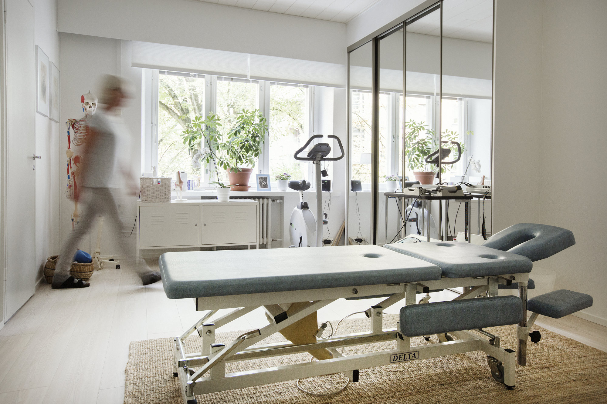
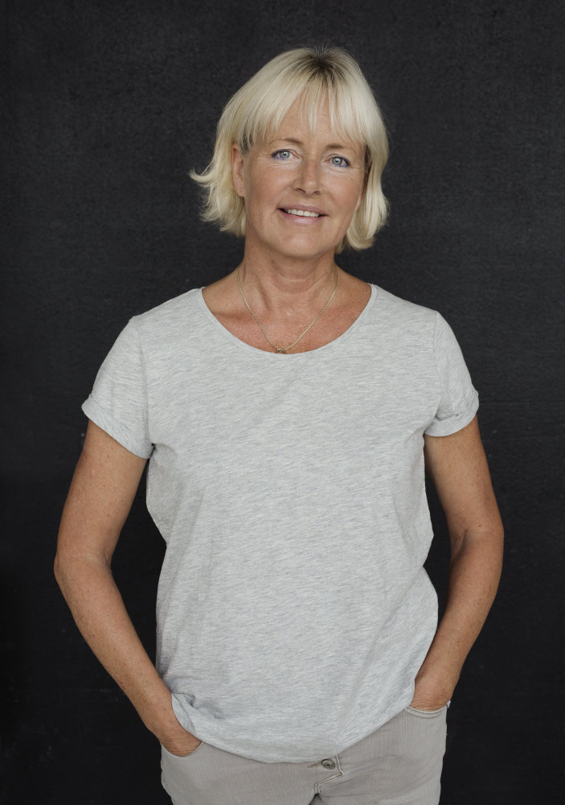
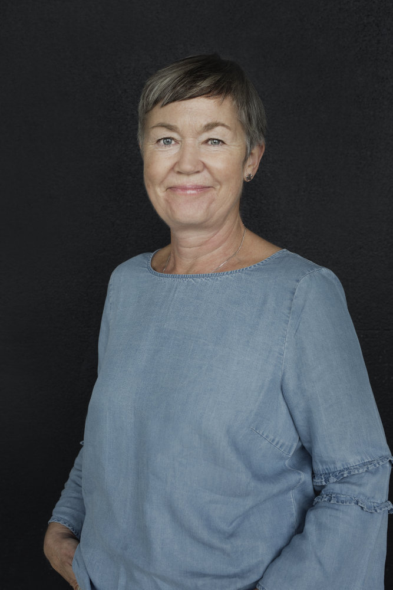
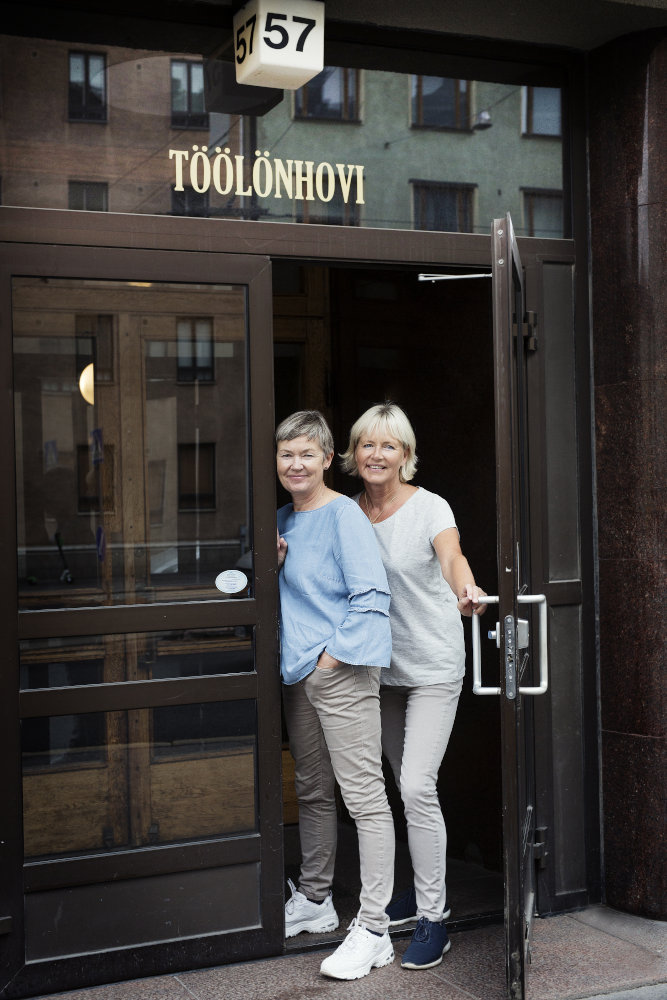

<!DOCTYPE html>
<html>
<!-- DELETE THIS COMMENT -->

<head>
  <link rel="apple-touch-icon" sizes="180x180" href="./favicon_io/apple-touch-icon.png">
  <link rel="icon" type="image/png" sizes="32x32" href="./favicon_io/favicon-32x32.png">
  <link rel="icon" type="image/png" sizes="16x16" href="./favicon_io/favicon-16x16.png">
  <link rel="manifest" href="./favicon_io/site.webmanifest">
  <meta charset="utf-8">
  <meta name="description"
    content="Neofysio tarjoaa lymfa- ja fysioterapiapalveluja hyvien kulkuyhteyksien varrella Helsingin Töölössä.">
  <meta name="viewport" content="width=device-width, initial-scale=1, shrink-to-fit=no">
  <meta name="format-detection" content="telephone=no">
  <!-- Bootstrap CSS -->
  <link rel="stylesheet" href="https://stackpath.bootstrapcdn.com/bootstrap/4.3.1/css/bootstrap.min.css"
    integrity="sha384-ggOyR0iXCbMQv3Xipma34MD+dH/1fQ784/j6cY/iJTQUOhcWr7x9JvoRxT2MZw1T" crossorigin="anonymous">
  <link rel="stylesheet" href="styles.css">
  <!-- Icons -->
  <script src="https://kit.fontawesome.com/7fab744668.js"></script>
  <!-- Scrollreveal -->
  <script src="https://unpkg.com/scrollreveal"></script>
  <title>Neofysio</title>
</head>

<body data-spy="scroll" data-target="#navbar" data-offset="150">
  <!-- Hide sections for scrollreveal -->
  <script src="./hideSections.js"></script>
  <nav class="navbar nav navbar-expand-lg bg-white navbar-light sticky-top nav-trans slide-down-slow hide-js"
    id="navbar">
    <a class="navbar-brand text-purple" href="#">
      
      Neofysio
    </a>
    <button class="navbar-toggler" type="button" data-toggle="collapse" data-target="#navbarNav"
      aria-controls="navbarNav" aria-expanded="false" aria-label="Toggle navigation">
      <span class="navbar-toggler-icon"></span>
    </button>
    <div class="collapse navbar-collapse nav" id="navbarNav">
      <ul class="navbar-nav nav-pills">
        <li class="nav-item mx-4">
          <a class="nav-link" href="#home">Etusivu</a>
        </li>
        <li class="nav-item mx-4">
          <a class="nav-link" href="#services">Palvelut</a>
        </li>
        <li class="nav-item mx-4">
          <a class="nav-link" href="#staff">Henkilökunta</a>
        </li>
        <li class="nav-item mx-4">
          <a class="nav-link" href="#pricing">Hinnasto</a>
        </li>
        </li>
        <li class="nav-item mx-4">
          <a class="nav-link" href="#contact">Yhteystiedot</a>
        </li>
      </ul>
    </div>
  </nav>

  <div class="container-fluid">
    <div class="row slide-up-slow justify-content-center hide-js" id='home'>
      <div class="col-sm-12 col-lg-6 pt-3">
        
        <p>
          Neofysio on kahden kokeneen fysio- ja lymfaterapeutin yhteinen vastaanottotila, joka sijaitsee hyvien
          kulkuyhteyksien varrella
          Töölöntorin kupeessa sijaitsevassa 1930-luvun kerrostalossa.
        </p>
        <p>
          Toivotamme tervetulleiksi niin lääkärinlähetteellä (SV3) kuin ilman lähetettä tulevat asiakkaat.
        </p>
        <p>
          Haluamme antaa asiakkaillemme aikaa kertoa taustastaan ja ongelman syntymisen syystä. Pyrimme kartoittamaan
          tämän pohjalta juuri hänelle parhaan hoitopolun.
        </p>
      </div>
      <div class="col-sm-12 col-lg-6 text-center lead px-0">
        
        <p class="small">
          Vastaanottomme hoitotila on raikas ja rauhallinen.
        </p>
      </div>
      <div class="col-12 py-5">

        <p class="blockquote text-center">
          <span class="doublequote">&#8220;</span>Liike on lääkettä<span class="doublequote">&#8221;</span>
        </p>

      </div>
    </div>

    <!-- Services -->
    <div class="row slide-up-slow bg-blue pt-5 hide-js" id="services">
      <div class="col">
        <h1 class="slide-down-fast pb-3">Palvelut <i class="fas fa-heart fa-lg text-purple"></i></h1>
        <div class="row">
          <div class="col">
            <h4 class="text-left text-sm-center mb-2">
              <i class="fas fa-hand-holding text-purple fa-2x"></i>
              Lymfa- ja fysioterapia
            </h4>
            <p>
              Erikoisosaamisemme on kokonaisvaltainen lymfaterapia, mutta otamme vastaan myös muista tuki- ja
              liikuntaelinongelmista kärsiviä fysioterapiaa tarvitsevia asiakkaita. Liike- ja liikuntaohjeet kuuluvat
              asiakkaan kokonaisvaltaiseen hoitoon.
            </p>
            <h4 class="text-left text-sm-center mb-2">
              <i class="fas fa-hand-holding text-purple fa-2x mb-2"></i>
              Manuaalinen käsittely
            </h4>
            <p>
              Tarvittaessa käsittelemme manuaalisesti eri tekniikoilla. Näihin kuuluvat manuaalinen lymfaterapia
              (Vodder), perinteinen hieronta ja tarvittaessa faskiakäsittely.
            </p>
          </div>
          <div class="col">
            <h4 class="text-left text-sm-center mt-3 mt-md-0">
              <i class="fas fa-toolbox fa-lg text-purple fa-2x mb2"></i>
              Laitteisto
            </h4>
            <p>
              Käytössämme on fysikaalisen hoidon laitteita, kuten ultraääni, lääketieteellinen laser (Irradia) ja
              syvävärähtelylaite Hivamat. Lisäksi käytämme lämpöpakkauksia pehmittämään ja rentouttamaan jännittyneitä
              lihaksia.
            </p>
            <h4 class="text-left text-sm-center mb-2 mt-3 mt-md-0">
              <i class="fas fa-notes-medical text-purple fa-2x"></i>
              PSOP
            </h4>
            <p>
              Olemme palveluntuottajina Helsingin kaupungin Palveluseteli- ja ostopalvelujärjestelmässä (PSOP) sekä
              lymfaterapia-asiakkaiden että rintamaveteraanien osalta.
              Lymfaterapia-asiakkaat maksavat vain omavastuuosuuden. Rintamaveteraaneilla ei ole
              omavastuuta.
            </p>
          </div>
        </div>
        <h4 class="text-center mt-3">
          <i class="fas fa-car-side text-purple fa-2x"></i>
        </h4>
        <p class="text-center lead">
          Teemme myös kotikäyntejä!
        </p>
      </div>
    </div>

    <!-- Staff -->
    <div class="row slide-up-slow bg-dark-purple py-5 hide-js" id="staff">
      <div class="col-12">
        <h1 class="slide-left text-center">Henkilökunta <i class="fas fa-user-friends"></i></h1>
        <div class="header-bar mb-5"></div>
      </div>
      <!-- Helena -->
      <div class="col-12 pb-5">
        <div class="row">
          <div class="col-sm">
            <h2 class="text-center d-sm-none">
              Helena Iskala
            </h2>
            
          </div>
          <div class="col-sm">
            <h2 class="text-center text-md-left d-none d-sm-inline">
              Helena Iskala
            </h2>
            <p class="lead text-center text-md-left">
              Fysioterapeutti, Lymfaterapeutti
            </p>
            <p>
              <i class="fas fa-phone" aria-label="phone number"></i>
              050-588 4205 <br>
              <i class="fas fa-envelope" aria-label="email"></i>
              helena@iskala.com
            </p>
            <h3>
              Koulutus
            </h3>
            <ul>
              <li>
                Fysioterapeutti 1984
              </li>
              <li>
                Vodder Lymfaterapeutti 1988 <a class="text-light" href="http://lymfa.net" target="_blank"
                  rel="noopener noreferrer">(www.lymfa.net)</a>
              </li>
            </ul>
            <p>
              Säännöllisiä ammattitaitoa syventäviä koulutuksia esimerkiksi sekundaarisen lymfaturvotuksen ja
              leikkausten
              aiheuttamista komplikaatioista, esimerkkinä rintasyövän jälkeinen turvotus- sekä faskiaongelmat ja
              niiden
              hoito.
            </p>
            <p>Erityisosaaminen myös Lääketieteellisessä laserissa <a class="text-light" href="https://medlaser.fi"
                target="_blank" rel="noopener noreferrer">(www.medlaser.fi)</a> sekä Hivamathoidossa (Deep
              oscillation).</p>
            <p>
              Olen Suomen Fysioterapeuttien ja Suomen kuntoutusyrittäjät ry:n jäsen.
            </p>
          </div>
        </div>
      </div>
      <!-- Anne -->
      <div class="col">
        <div class="row mt-5">
          <div class="col-sm">
            <h2 class="text-center d-sm-none">
              Anne Schauman
            </h2>
            
          </div>

          <div class="col-sm">
            <h2 class="text-center text-md-left d-none d-sm-inline">
              Anne Scauman
            </h2>
            <p class="lead text-center text-md-left">
              Fysioterapeutti, Lymfaterapeutti
            </p>
            <p>
              <i class="fas fa-phone" aria-label="phone number"></i>
              Puh. 0400 165092 <br>
              <i class="fas fa-envelope" aria-label="email"></i>
              anne.schauman@gmail.com
            </p>
            <h3>
              Koulutus
            </h3>
            <ul>
              <li>
                Fysioterapeutti 1983
              </li>
              <li>
                Vodder Lymfaterapeutti 2001 <a class="text-light" href="http://lymfa.net" target="_blank"
                  rel="noopener noreferrer">(www.lymfa.net)</a>
              </li>
            </ul>
            <p>
              Olen käynyt useissa säännöllisissä ammattitaitoa
              syventävissä koulutuksissa,
              koskien esimerkiksi lymfaturvotuksien ja leikkauksien aiheuttamia
              komplikaatioita. Käytän
              kokemustani rintasyöpäleikkausten aiheuttamissa
              ongelmissa, koskien turvotusta
              ja faskiakudoksen kireyttä.
            </p>
            <p>
              Pitkäaikainen kokemus rintamaveteraanien hoidoista. Erityisosaaminen Hivamat (Deep Oscillation) hoidossa.
            </p>
            <p>
              Olen Suomen Fysioterapeuttien jäsen.
            </p>
          </div>
        </div>
      </div>
    </div>


    <!-- Pricing -->
    <div class="row slide-up-slow pt-5 hide-js" id="pricing">
      <div class="col-sm">
        <div>
          <h1 class="slide-left">Hinnasto</h1>
        </div>
        <p class="mt-3">Olemme palveluntuottajina Helsingin kaupungin Palveluseteli- ja ostopalvelujärjestelmässä (PSOP)
          sekä lymfaterapia-asiakkaiden että rintamaveteraanien osalta. Yksityisen puolen lääkärin SV3 -lähetteellä Kela
          korvaa lymfaterapiasta ja fysioterapiasta osan hoitomaksusta.</p>
        <table class="table table-striped table-sm mt-4">
          <thead>
            <tr>
              <th scope="col">Palvelu</th>
              <th scope="col">Kesto</th>
              <th scope="col">Hinta</th>
            </tr>
          </thead>
          <tbody>
            <tr>
              <td>Fysioterapia</td>
              <td>30 min</td>
              <td>50 €</td>
            </tr>
            <tr>
              <td></td>
              <td>45 min</td>
              <td>60 €</td>
            </tr>
            <tr>
              <td></td>
              <td>60 min</td>
              <td>70 €</td>
            </tr>
            <tr>
              <td>Lymfaterapia</td>
              <td>30 min</td>
              <td>55 €</td>
            </tr>
            <tr>
              <td></td>
              <td>45 min</td>
              <td>65 €</td>
            </tr>
            <tr>
              <td></td>
              <td>60 min</td>
              <td>74 €</td>
            </tr>
            <tr>
              <td></td>
              <td>90 min</td>
              <td>110 €</td>
            </tr>
            <tr>
              <td>Lääketieteellinen laser</td>
              <td>30 min</td>
              <td>40 €</td>
            </tr>
            <tr>
              <td></td>
              <td>45 min</td>
              <td>60 €</td>
            </tr>
            <tr>
              <td>Hivamat</td>
              <td>30 min</td>
              <td>40 €</td>
            </tr>
            <tr>
              <td></td>
              <td>45 min</td>
              <td>60 €</td>
            </tr>
          </tbody>
        </table>
        <p class="mt-3">Peruutukset tulee tehdä viimeistään hoitoa edeltävänä päivänä.
          <span class="text-danger">Peruuttamattomista ajoista peritään täysi hinta. </span></p>
      </div>
    </div>

    <div class="row slide-up-slow mt-5 bg-purple hide-js" id="contact">
      <div class="col-sm">
        <div class="text-center mt-3">
          <h1 class="slide-left">Yhteystiedot</h1>
          <div class="header-bar"></div>
          <div class="row mt-3 pb-5">
            <div class="col-sm">
              <h3 class="contact-name">Helena Iskala</h3>
              <p class="lead">
                Fysio/lymfaterapeutti <br>
                050 5884205
              </p>
            </div>
            <div class="col-sm">
              <h3 class="contact-name">Anne Schauman</h3>
              <p class="lead">
                Fysio/lymfaterapeutti <br>
                0400 165092
              </p>
            </div>
          </div>
          <h3 class="contact-name">Käyntiosoite</h3>
          <p class="lead">
            Runeberginkatu 57 A 5
            00260 Helsinki<br>
          </p>
        </div>
      </div>
    </div>
    <div class="row slide-up-slow bg-dark-purple hide-js">
      <div class="col-md-4 px-0">
        
      </div>
      <div class="col-md-8 px-0">
        <div class="mapouter">
          <div class="gmap_canvas">
            <iframe width="100%" height="100%" id="gmap_canvas"
              src="https://maps.google.com/maps?q=Runeberginkatu%2057%20A%20%205%2C%2000260%20Helsinki&t=&z=15&ie=UTF8&iwloc=&output=embed"
              frameborder="0" scrolling="no" marginheight="0" marginwidth="0">
            </iframe>
          </div>
        </div>
      </div>
    </div>
    <footer class="page-footer" id="footer">
      <div class="row footer bg-dark-purple">
        <div class="col text-center">
          <div class="footer-copyright small text-center py-3">
            © 2019 Copyright: Neofysio
          </div>
        </div>
      </div>
    </footer>
  </div>
  </div>

  <script src="https://code.jquery.com/jquery-3.4.1.slim.min.js"
    integrity="sha256-pasqAKBDmFT4eHoN2ndd6lN370kFiGUFyTiUHWhU7k8=" crossorigin="anonymous"></script>
  <script src="https://cdnjs.cloudflare.com/ajax/libs/popper.js/1.14.7/umd/popper.min.js"
    integrity="sha384-UO2eT0CpHqdSJQ6hJty5KVphtPhzWj9WO1clHTMGa3JDZwrnQq4sF86dIHNDz0W1"
    crossorigin="anonymous"></script>
  <script src="https://stackpath.bootstrapcdn.com/bootstrap/4.3.1/js/bootstrap.min.js"
    integrity="sha384-JjSmVgyd0p3pXB1rRibZUAYoIIy6OrQ6VrjIEaFf/nJGzIxFDsf4x0xIM+B07jRM"
    crossorigin="anonymous"></script>
  <script src="./index.js"></script>
  <script src="./scrollReveal.js" defer></script>
</body>

</html>